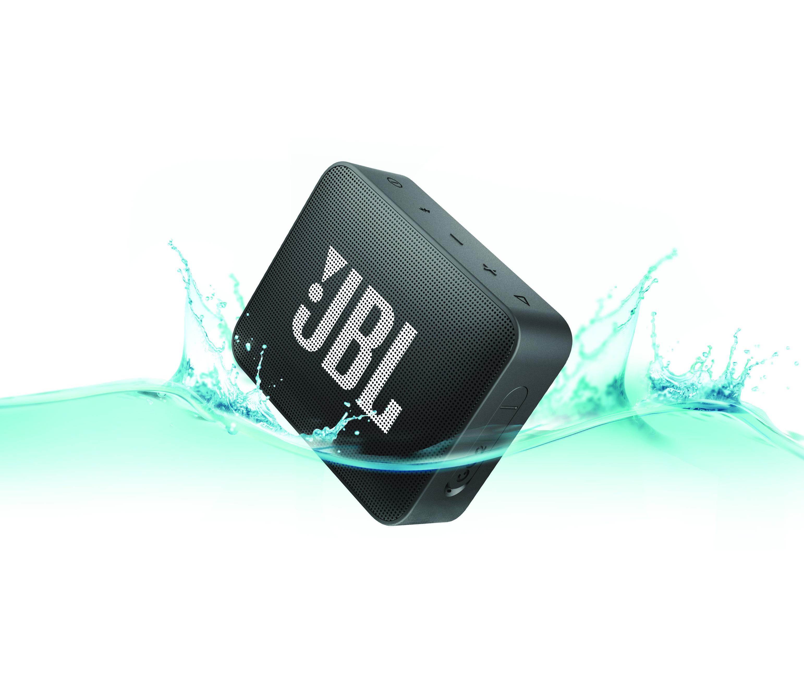

JBL GO 2

JBL GO 2: обложка, время работы, размеры, подключение и комплектация. Изображения и характеристики взяты из официальной спецификации; моя работа — структура, тексты слайдов и оформление.

Время воспроизведения зависит от громкости и аудиоматериала.
Ширина × высота × глубина. Вес — 184 г.
Встроенный микрофон для разговоров через громкую связь.
Состав указан по официальной спецификации HARMAN. Сетевой адаптер в списке не заявлен.
Официальная спецификация: фотографии, характеристики, комплект поставки и оговорка о времени воспроизведения.
Открыть документ производителяРазнести информацию по пяти вопросам покупателя. Не добавлять неподтверждённые преимущества; сохранить оговорку рядом с «до 5 часов».
Единицы измерения и порядок размеров проверены. Micro USB не подменён на USB-C. Отсутствующий в списке сетевой адаптер не добавлен.